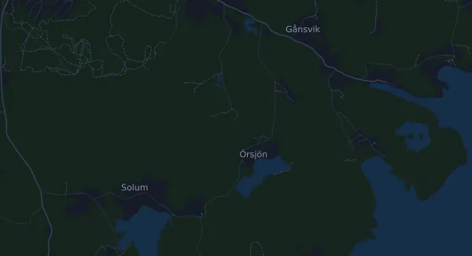

Härnö Trail 21 km
- Matka
- 21,1 km
- Nousumetrit
- ↑ 826 m
- Korkein kohta
- 176 m mpy
- Alusta
- Maasto ja polku
- Luonne
- Hyvin mäkinen
Korkeusprofiili
Valmistaudu Milan kanssa
Mila on juoksuvalmentaja sovelluksessa. Kun lisäät kisan suunnitelmaasi, valmentaja suunnittelee viikot starttiin asti kuntosi mukaan ja antaa sinulle loppuaikaennusteen sekä suunnitelman vauhdista, juomisesta ja energiasta reitillä.

Oikea harjoitus. Oikea päivä.
Reitti

Tietoa reitistä
Härnö Trail 21 km on 21,1 km:n polkujuoksu (Härnösand, Ruotsi). Reitillä on nousua 826 m ja laskua 826 m, 39 m/km, joten reitti on hyvin mäkinen. Korkein kohta on 176 m ja matalin 1 m merenpinnan yläpuolella.
Suurin nousu alkaa kohdassa km 13,7: 115 nousumetriä 1,4 km:n matkalla, keskimäärin 8,2 %, ja huippu on 124 m mpy. Reitillä on yhteensä 12 vähintään 25 nousumetrin nousua; viimeinen alkaa kohdassa km 19,6.
Mila-sovelluksessa valmentaja kuvailee reitin tarkasti omalla kielelläsi ja suunnittelee vauhtisi ja energiasi sille.
Nousut
| Alkaa kohdassa | Pituus | Nousumetrit | Jyrkkyys | Huippu (m mpy) |
|---|---|---|---|---|
| km 1,5 | 760 m | 70 m | 9,1 % | 176 |
| km 3,6 | 760 m | 31 m | 4,1 % | 138 |
| km 5,6 | 810 m | 40 m | 5,0 % | 127 |
| km 6,9 | 800 m | 49 m | 6,2 % | 110 |
| km 7,9 | 710 m | 42 m | 5,8 % | 128 |
| km 10,2 | 1,4 km | 44 m | 3,2 % | 53 |
| km 11,8 | 450 m | 36 m | 8,0 % | 57 |
| km 13,7 | 1,4 km | 115 m | 8,2 % | 124 |
| km 15,3 | 360 m | 36 m | 9,9 % | 124 |
| km 15,9 | 630 m | 71 m | 11,2 % | 162 |
| km 17,3 | 1,2 km | 36 m | 3,1 % | 144 |
| km 19,6 | 780 m | 26 m | 3,4 % | 158 |
Tuloksia aiemmista kisoista
Vuonna 2025 maaliin tuli 262 juoksijaa. Mediaaniaika oli 3:08:22; kentän keskimmäinen puolikas tuli maaliin ajassa 2:47:06–3:33:25 ja 80 % ajassa 2:30:57–3:58:00. tulosluettelo
Vuonna 2024 maaliin tuli 259 juoksijaa. Mediaaniaika oli 3:12:35; kentän keskimmäinen puolikas tuli maaliin ajassa 2:45:22–3:41:07 ja 80 % ajassa 2:22:58–4:07:29. tulosluettelo
Vuonna 2023 maaliin tuli 318 juoksijaa. Mediaaniaika oli 3:16:19; kentän keskimmäinen puolikas tuli maaliin ajassa 2:46:09–3:41:29 ja 80 % ajassa 2:21:59–4:09:37. tulosluettelo
Koottu virallisista tulosluetteloista: vain määrät ja ajat, ei nimiä eikä yksittäisiä tuloksia.
Vauhtitaulukko
Härnö Trail 21 km ajassa 1:30:00 – vauhti kilometrillä ja väliajat
4:16 min/km · km 5: 21:20 · km 10: 42:39 · km 15: 1:03:59 · maali: 1:30:00
Härnö Trail 21 km ajassa 1:45:00 – vauhti kilometrillä ja väliajat
4:59 min/km · km 5: 24:53 · km 10: 49:46 · km 15: 1:14:39 · maali: 1:45:00
Härnö Trail 21 km ajassa 2:00:00 – vauhti kilometrillä ja väliajat
5:41 min/km · km 5: 28:26 · km 10: 56:52 · km 15: 1:25:18 · maali: 2:00:00
Härnö Trail 21 km ajassa 2:15:00 – vauhti kilometrillä ja väliajat
6:24 min/km · km 5: 31:59 · km 10: 1:03:59 · km 15: 1:35:58 · maali: 2:15:00
Ajat olettavat tasaisen vauhdin koko matkan. Tämä on pelkkää laskentaa, ei ennuste: mäissä, ruuhkassa ja juomapisteillä vauhti vaihtelee.
Usein kysyttyä
Härnö Trail 21 km: milloin kisa juostaan?
Härnö Trail 21 km juostaan lauantaina 2. lokakuuta 2027 (alustava päivä). Tarkista päivä ja lähtöaika järjestäjältä.
Härnö Trail 21 km: kuinka pitkä matka on ja paljonko nousua on?
Matka on 21,1 km, nousua 826 m ja laskua 826 m. Korkein kohta on 176 m mpy.
Härnö Trail 21 km: millainen reitti on?
Reitti on hyvin mäkinen, nousua keskimäärin 39 m kilometrillä. Reitillä on 12 vähintään 25 nousumetrin nousua; suurin alkaa kohdassa km 13,7: 115 m 1,4 km:n matkalla. Lähtö ja maali ovat samassa paikassa. Alusta on maastoa ja polkua.
Härnö Trail 21 km: miten jaan vauhtini?
Pyri tasaiseen rasitukseen mieluummin kuin tasaiseen vauhtiin: anna vauhdin hidastua ylämäissä, ota se takaisin, kun maasto tasaantuu, ja jarruttele ensimmäisillä kilometreillä. Suurimmat nousut alkavat kohdissa km 1,5, km 6,9, km 13,7 ja km 15,9. Milasta saat juuri tälle reitille vauhtisuunnitelman oman kuntosi mukaan.
Lisää samanlaisia kisoja
Lisää kisoja lähellä
- Härnö Trail Kort 7 km2. lokakuuta 2027 · Härnösand, Ruotsi
- Härnö Trail Mellan 14 km2. lokakuuta 2027 · Härnösand, Ruotsi
- Lidingöloppet 30 km25. syyskuuta 2027 · Lidingö, Ruotsi
- Tjurruset 10 km9. lokakuuta 2027 · Stockholm (Norra Djurgården), Ruotsi
- Helsingborg Marathon 42,3 km4. syyskuuta 2027 · Helsingborg, Ruotsi
- Midnattsloppet Malmö 10 km28. elokuuta 2027 · Malmö, Ruotsi
Valmistaudu Milan kanssa
Oikea harjoitus. Oikea päivä.
Tiedot ovat reittitiedostosta ja järjestäjän tiedoista. Tarkista päivä, lähtöajat ja säännöt järjestäjältä.
Mila ei ole yhteydessä järjestäjään eikä kisan sponsoreihin, eivätkä ne sponsoroi tai suosittele Milaa. Nimet ja tavaramerkit kuuluvat omistajilleen. Järjestäjä tai oikeuksien haltija? Pyydä muutosta tai poistoa